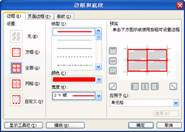

上机指南
一、一级考试题型介绍
1. 一级MS Office和一级B
一级考试中，一级MS
Office和一级B看似两种考试，实际上就是一种考试。两者的区别就是：①一级B少考一题（PowerPoint题）；②一级B在汉字录入时，录入的字数要多一些。除此外，其他方面，如：
l
一级MS Office和一级B的官方教程完全一致；
l
一级MS Office和一级B的考试题型完全一致（虽然有的题分值不同，但试题完全相同）；
l
一级MS Office和一级B共用一个题库，试题完全一致（录入题、PowerPoint题除外）；
l
一级MS Office和一级B考核点、解题方法等均完全一致。
2. 考试题型分析
一级考试中，一级MS
Office考7大题、一级B考6大题，两者差考一题――PowerPoint题。
其中，选择题虽然上机操作，但还是属于理论性试题。其他如基本操作题、录入题、字处理题、电子表格题、演示文稿题（即PowerPoint题）和上网题都属于操作性的试题。
表1-1中就列举了一级考试各种题型的分析信息。
表1-1
一级考试题型分析
|
题型 |
考什么 |
一级MS分值 |
一级B 分值 |
考试形式 |
难度 |
如何学习 |
|
选择题 |
计算机基础知识和少量网络基础知识的内容 |
20 |
20 |
上机考试 |
理论题为主，知识点较简单但众多 |
牢记理论知识 |
|
基本操作题 |
Windows XP下对文件/文件夹各项操作 |
10 |
10 |
上机考试 |
操作简单 |
略加练习即可 |
|
汉字录入题 |
使用拼音、五笔等输入法输入至少150汉字 |
10 |
15 |
上机考试 |
操作简单 |
提供录入熟练度 |
|
字处理题 |
使用Word
2003排版文档、制作表格 |
25 |
25 |
上机考试 |
考点多，有难度 |
掌握所有考点，操作时要细心 |
|
电子表格题 |
使用Excel
2003小型计算、制作图表、数据处理 |
15 |
20 |
上机考试 |
函数题有难度 |
熟悉朝珠方法，重点关注函数题 |
|
演示文稿题 |
使用PowerPoint
2003制作和修饰幻灯片 |
10 |
不考 |
上机考试 |
操作简单，但很多人不熟悉此软件 |
熟悉PowerPoint软件 |
|
上网题 |
收发邮件及其附件，浏览、保存网页 |
10 |
10 |
上机考试 |
操作简单 |
略加练习即可 |
3. 一级最佳学习方法
（1）选择题
选择题中理论性试题居多，需要的是多看书，将教程中“计算机基础知识”涉及的知识点全部熟悉一遍，再通过多做一些试题，可以轻松地达到少丢分的效果。
如果各位考生没有购买教程，可以登录“等考吧”网站www.ncre8.net，学习最新版《选择题重难点视频教程》。
（2）操作题
基本操作题、汉字录入题等都是上机操作题，学习这些试题的最好方法就是：①多上机，②多练题。因为本书就是一级上机题库，所以如果要练题就应该以本书中的试题为主，勤加练习。对于不懂的操作，可以通过阅读书后解析来答疑解惑。另外，学习时遇到难题，“一级学习QQ群”也是你提问题、获得解答的好去处。
二、一级上机考试指南
1．上机特别提示
① 考生在上机考试时，应在开考前30分钟进入候考室，交验准考证和身份证（军人身份证或户口本），同时抽签确定上机考试的机器号；上机考试迟到考生不得进入考场。
② 考生提前5分钟进入机房，坐在由抽签决定的机器号上，不允许乱坐位置。
③ 不得擅自登录与自己无关的考号。
④ 不得擅自拷贝或删除与自己无关的目录和文件。
⑤ 考生不得在考场中交头接耳、大声喧哗。
⑥ 未到10分钟不得离开考场。
⑦ 考试中计算机出现故障、死机、死循环、电源故障等异常情况(即无法进行正常考试时)，应举手示意与监考人员联系，不得擅自关机。
⑧ 考生答题完毕后应立即离开考场，不得干扰其他考生答题。
2．上机考试环境
① 一级MS Office及一级B考试的硬件环境见表1-2。
表1-2
硬件环境
|
设备 |
具体要求 |
|
主 机 |
PⅢ 1GHz相当或以上 |
|
内 存 |
128MB以上（含128MB） |
|
显 卡 |
SVGA 彩显 |
|
硬盘空间 |
500MB以上可供考试使用的空间（含500MB） |
② 一级MS Office及一级B考试的软件环境见表1-3。
表1-3
软件环境
|
具体题型 |
软件要求 |
|
操作系统 |
Windows XP 中文版 |
|
输入法 |
智能ABC、微软拼音、全拼、双拼、五笔（需提前预约） 其他如紫光输入法、搜狗输入法等暂不可用 |
|
字处理题、电子表格题、演示文稿题 |
MS Office
2003（Word 2003、Excel 2003、PowerPoint 2003） |
|
上网题 |
浏览器：IE
6.0、收发邮件：Outlook Express |
考生在平时练习时，也应当把自己所用的计算机按以上的要求配置，尤其是操作系统、Office软件必须使用以上规定的版本，否则将会出现非常大的麻烦。
三、一级上机考试流程
全国计算机等级考试一级（包括一级MS和一级B）上机考试，满分100分，考试时间90分钟。
1．考场情况
实际考试一般在某大中专院校的机房进行。当我们来到考场的时候，工作人员已经在各台计算机上安装了考试必备的各类软件。考试所用的所有计算机连成局域网，最终考试结束后，由统一的服务器负责收分、统计。
一般情况下，考生所报名的地方就是考试的考场。在参加正式考试前，一般该考场都会在考试前期提供免费练习，注意尽量不要错过，一是可以提前熟悉考场环境，二是可以提前熟悉考试系统。
参加上机考试最好提前到达考场，在候考房间等待，一般情况会有监考老师安排排号。由于机房机器有限，一般是一批考生结束考试后另一批考生再进入。
2．登录
当考生进入指定的机位后，根据监考老师的指令开机（有的计算机已经开机），单击桌面上或“开始”菜单中的“考试系统”快捷方式进入考试系统。
第一步要做的是在考试系统中登录，输入准考证号，确认身份后进入考试系统。具体操作步骤如下：
步骤1： 启动考试程序。出现登录界面，由考生将自己准考证上标记的准考证号码输入进去，进行身份验证，如图1-1所示。
图1-1 身份验证
步骤2：输入准考证号后，系统弹出“资料核对”的对话框，显示此准考证号对应的考生姓名、身份证号码，如果显示信息正确，就可以进行下一步操作了，单击“是”按钮进入下一环节，如图1-2所示。
图1-2
验证信息
步骤3：身份验证后，进入“考试须知”界面，这里显示着考试的题型、分值、考试时间，如图1-3所示。一旦单击“开始答题并计时”按钮，则正式进入考试，并开始自动倒计时。
图1-3
考试须知
3．考试界面及答题
（1）考试信息条
在整个考试过程中，“考试界面”窗口的上方始终会显示一个“考试信息条”，如图1-4所示。“考试信息条”显示着考生的个人信息、考试剩余时间。“考试信息条”还有两个按钮：
l “隐藏窗口”按钮：用于显示或隐藏“考试窗口”，单击就变成了“显示窗口”按钮，此时考试窗口会隐藏起来。
l “交卷”按钮：单击此按钮表示退出系统、交卷。除非你真的需要交卷，否则不要轻易动此按钮，一旦交卷就无法继续做题。
图1-4 信息窗口
（2）“考试界面”窗口
“考试界面”窗口的功能有两个，如图1-5所示：
①
一是显示题干部分，如单击“字处理”按钮就会显示“字处理题”的题干部分，单击其他按钮会显示其他题目的题干。注意：这里不能直接做题。
②
二是窗口的左上角有一个“答题”菜单，单击此菜单会弹出下级菜单，从中选择相应“试题”可立即启动软件考试答题。
图1-5 考试窗口
4．考生文件夹
考生文件夹是放置题目提供的源程序、考生存放答题结果的唯一位置。
考生做完题目后必须将结果放在考生文件夹中，否则结果必然是零分。
考生文件夹的命名是系统默认的，一般为准考证号的前四位和后四位。如准考证号是：3539110007000122，考生文件夹则有可能是以下两种中的一种：
C:\WEXAM\35390122 单机版
K:\考生电脑号（局域网）\35390122 网络版（大多考点使用）
5．交卷
考试时间一到，考试系统会自动终止，考生将无法继续考试，之前的操作会被视作交卷；若提前交卷，则使用“考生信息条”中“交卷”按钮，系统会给出“是否确认交卷”的提示，这里选择“确定”即可。
特别提示：当考生交卷后，不要立即离开自己的机器，而是举手请监考老师来，输入一个结束密码。至此，我们的整个考试才真正宣告结束。（交卷后，如遇到机器死机等异常，应及时请监考老师处理）
四、一级考试重难点分析
1.选择题
选择题是要求考生在“选择题答题系统”下，进行20道标准化单项选择题的答题操作。
进入考试系统正式考试后，单击“考试界面”上的“选择题”按钮可以观看选择题的分值、做题要求，但真正做题不在这里。单击“答题－选择题”菜单命令，就可以打开“选择题答题系统”，如图1-6所示。
“选择题答题系统”的主体是题目部分，直接单击选项前的单选按钮，就表示选中了你认为正确的选项。界面下方有20个红色方块，一旦试题的选项被勾选后，对应的方块就会变成蓝色。通过观察这些方块，我们很容易可以看到有哪些试题漏做了！
图1-6
“选择题答题系统”窗口
2. 基本操作题
基本操作题是要求考生在Windows
XP系统下，对文件或文件夹进行操作。
进入考试系统后，单击“考试界面”上的“基本操作题”按钮可以观看基本操作题的试题要求，但真正做题不在这里。单击“答题－基本操作”菜单命令，就可以打开“考生文件夹”，按题目要求进行操作即可，如图1-7所示。
图1-7
考试窗口
在我们正式做基本操作题之前，有两项准备工作必须要做。
（1）显示隐藏的文件/文件夹
有这样的一道题目“将考生文件夹下NCRE文件夹的隐藏属性取消”，结果考生一进入考生文件夹下，找不到NCRE文件夹，这是因为NCRE文件夹是“隐藏”属性的，如果系统默认是“不显示隐藏的文件夹”，那么我们就无法看到带有“隐藏”属性的文件或文件夹了。所以，我们必须让隐藏的文件夹显示出来。
① 在“我的电脑”窗口中单击“工具”菜单的“文件夹选项”命令，如图1-8所示。
图1-8 启动“文件夹选项”
② 在弹出的“文件夹选项”对话框中单击“查看”标签，如图1-9所示。
③ 在“隐藏文件和文件夹”选项中勾选“显示所有文件和文件夹”单选按钮，如图1-10所示。
图1-9 “文件夹选项”对话框
图1-10
选择某选项
（2）显示隐藏的文件扩展名
考试时，Windows XP默认的是不显示文件的扩展名，如“tndb.doc”显示出来就是“tndb”。在我们做题之前必须修改Windows XP某些设置，使扩展名显示出来。
① 操作步骤和“显示隐藏的文件”的步骤相似，在“文件夹选项”对话框中“查看”标签下修改。
② 单击“隐藏已知文件类型的扩展名”复选框，将其关闭，单击“确定”完成操作。
此后将显示所有文件（夹）及文件的扩展名。
重难点操作指南
（1）新建、命名、删除文件/文件夹
这是3类对文件/文件夹最基础的操作。
操作方法有多种，以下介绍最简单的办法：
新建：右单击窗口空白处，在快捷菜单中选择“新建”－“文件夹”（或具体的文件）即可。
命名：选定文件/文件夹，按F2键，输入文件/文件夹的新名称即可。
删除：选定文件/文件夹，按Delete键，弹出对话框，此时按“确定”按钮即可。
（2）复制、移动文件夹
① 选定源文件/文件夹。
② 按Ctrl+C是复制，按Ctrl+X是剪切（移动）。
③ 进入目标文件夹，按Ctrl+V粘贴。
（3）设置文件/文件夹属性
选定文件/文件夹，右单击弹出快捷菜单，选择“属性”命令，在“属性”对话框中一一设置即可，如图1-11所示。
图1-11 “属性”对话框
（4）新建快捷方式
选定文件/文件夹，右单击弹出快捷菜单，选择“创建快捷方式”命令，就会生成一个快捷方式文件。此文件和其他文件一样可以移动、复制、命名和删除。
3. 汉字录入题
汉字录入题是要求考生在规定的时间内输入一段文字。这段文字以中文为主，其他还有：
l
大小写英文：注意大小写转换。按Ctrl+空格键切换中、英文输入法，按Shift＋字母键输入大写字母，直接按CapsLock键输入大写字母；
l
标点符号：注意英文状态下符号和中文状态下符号的区别。如“.”是英文状态下的句号，而“。”是中文状态下的句号；
l
阿拉伯数字。
另外值得注意的是：考试时只提供Windows XP自带的输入法，主要有智能ABC、双笔、全拼、微软拼音输入法等。如果考试中，你的计算机并没有装配五笔字型输入法的，你可以举手请监考老师为你安装。考试时，录入题的界面如图1-12所示。录入正确的字，会显示蓝色；如果录入错误，会显示红色。当然，发现录入错误，可以再次修改。
图1-12 汉字录入题
4. 字处理题题
字处理题就是Word操作题，是一级中分值最高、考核点最多的题目。
进入考试系统正式考试后，单击“考试界面”上的“字处理题”按钮可以观看字处理题的试题要求，但真正做题不在这里。单击“答题－字处理题”菜单命令，展开菜单会出现试题中提到的以Word文件名命名的两个子菜单，单击某子菜单就可以打开对应的Word文档。按题目要求在这篇Word文档中一一操作即可，如图1-13所示。
图1-13 考试窗口
（1）文档格式设置
可分为以下几类：
① 字符格式设置：文字的字体、字号、字形、字符效果（空心、阴影等）、颜色、下划线、着重号、上下标、字符间距调整等。这些设置均可通过“字体”对话框实现，如图1-14所示。单击“格式”－“字体”可打开此对话框。
② 段落格式设置：对齐方式、段前/段后间距、左/右缩进、悬挂缩进和首行缩进、行间距。这些设置均可通过“段落”对话框实现，如图1-15所示。单击“格式”－“段落”会打开此对话框。
图1-14 “字体”对话框
图1-15 “段落”对话框
③ 特殊格式设置：边框和底纹、项目符号和编号、首字下沉、分栏。通过各自对应的对话框可以进行这些特殊格式的设置，这其中以边框和底纹的应用最广泛。图1-16、1-17所示是“边框和底纹”对话框的两个选项卡。
图1-16 “边框”选项卡
图1-17 “底纹”选项卡
（2）表格设置
表格设置的操作可分为以下几类：
l
表格结构：新建表格、文字转换成表格、添加行/列、删除行/列、合并单元格、拆分单元格。
l
表格修饰：行高和列宽、内外边框的框线和底纹、斜线表头。
l
数据处理：公式计算、数据排序。
这其中最常考的有两处：
① 行高和列宽设置
选定单元格，单击“表格”－“表格属性”，在“表格属性”对话框中“行”与“列”两个选项卡中可设置行高和列宽，如图1-18、1-19所示。

图1-18 “行”选项卡
图1-19 “列”选项卡
② 内外边框的框线设置
选定单元格，单击“格式”－“边框和底纹”，在“边框和底纹”对话框中“边框”选项卡中可设置框线。如何为内、外框线设置不同的格式呢？其操作步骤如下：
先设置内框线（也可先设置外框线，顺序不定），选择线型、宽度、颜色，此时我们的设置将应用于表格的内外框线，如图1
接着就可以设置外框线的线型、宽度、颜色了，然后单击“预览区”中需要应用的外框线线条即可，如图1

a.设置内框线
b.单击“自定义”按钮
c.设置外框线
图1-20 内外边框的框线设置
5. 电子表格题
电子表格就是Excel操作题，其分值仅次于Word题，但难度是最大的。
进入考试系统正式考试后，单击“考试界面”上的“电子表格”按钮可以观看电子表格的试题要求，但真正做题不在这里。单击“答题－电子表格题”菜单命令，展开以试题中提到Excel文件名命名的子菜单，单击某子菜单就可以打开对应的Excel。按题目要求在这篇Excel工作簿中一一操作即可，如图1-21所示。
图1-21 考试窗口
Excel操作题的考核操作主要有4类：
l
基本操作：单元格的合并及居中、工作表命名、单元格格式设置。
l
公式和函数。
l
图表新建和设置。
l
数据处理：排序、分类汇总、筛选。
下面介绍以下Excel操作题中的重点和难点――公式计算。
① 普通计算
如题目未指明要求使用公式，可使用口算或调用Windows自带的计算器计算，然后将数据输入到对应的单元格中。
求和可使用“自动求和功能”计算，选中一列或一行数据，单击按钮，就会自动计算出所选列或行中所有数据之和。
② 普通公式计算
略微复杂的计算要在产生计算结果的单元格中输入公式，公式的格式一般是：
例如在F3中输入“=B3+C3+E
再如B3中是去年销量，C3中是今年销量，求增长率，即可在E3中输入：“=(C3-B3)/B
③ 带有函数的公式计算
以上求和公式“=B3+C3+E
其中，“＝”是固定格式，任何一个公式都必须有；“( )”是函数必须要带的格式，也就是说，凡是出现函数，就必须有这一对括号。括号内是函数的参数。“SUM”是一个函数，功能是求和。经常考核的函数见表1-4。
表1-4
一级Excel必考函数
|
函数名 |
功能 |
考核率 |
|
函数名 |
功能 |
考核率 |
|
SUM |
求数据之和 |
★★☆ |
COUNT |
求数据个数 |
★★★ |
|
|
AVERAGE |
求平均值 |
★☆☆ |
IF |
按条件输出不同结果 |
★★★ |
|
|
ABS |
求绝对值 |
★★☆ |
COUNTIF |
按条件求数据的个数 |
★☆☆ |
|
|
MAX |
求最大值 |
★★☆ |
SUMIF |
按条件求数据之和 |
★★☆ |
|
|
MIN |
求最小值 |
★☆☆ |
MODE |
求出现频率最高的数据 |
★★☆ |
|
|
RANK |
求数据的排名 |
★☆☆ |
|
|
|
Excel函数是Excel中最难之处，本书附录有《一级考试中Excel函数学习课程》学习资料，学生可以通过阅读此资料以加强这部分的学习。
6. 演示文稿题
演示文稿题就是PowerPoint操作题。此题只在一级MS Office中考核，一级B暂不考核。
进入考试系统正式考试后，单击“考试界面”上的“演示文稿题”按钮可以观看演示文稿题的试题要求，但真正做题不在这里。单击“答题－演示文稿题”菜单命令，就可以通过单击子菜单中的演示文件名，即可打开对应的演示文稿文件，按题目要求进行操作即可。
图1-22 考试窗口
PowerPoint操作题的考核操作主要有3类：
l
基本操作：新建、移动、删除幻灯片，字符格式，幻灯片版式。
l
格式设置：背景的填充效果、应用设计模板。
l
播放设置：切换效果、动画设置。
PowerPoint操作题比较简单，稍加训练后可全面地掌握。这里，重点介绍一下“背景填充效果”、“幻灯片版式设置”、“应用设计模板”、“设置对象动画”和“幻灯片切换”等5种重要操作方法。
（1）背景填充
① 将某幻灯片作为当前幻灯片，选择“格式→背景”，打开“背景”对话框，单击下侧的下拉按钮，打开下拉列表，选择合适的颜色，单击“全部应用”或“应用”按钮完成设置，如图1-23所示。
② 如对填充颜色做更复杂的设置，则在“背景”对话框下拉列表中选择“填充效果”（如图1-23所示），打开“填充效果”对话框。
图1-23 “背景”对话框
“填充效果”对话框中共有4个选项卡，其中最常用的是“渐变”选项卡和“纹理”选项卡：
在“渐变”选项卡中：可选择“预设”，并从“预设颜色”中选择颜色方案，如“雨后初晴”、“漫漫黄沙”、“极目远眺”等，在“底纹样式”中选择过渡的角度，如图1-24所示。
在“纹理”选项卡中：可选择各种纹理样式，如“水滴”、“羊皮纸”、“新闻纸”、“白色大理石”等，如图1-25所示。
图1-24 “渐变”选项卡 图1-25
“纹理”选项卡
设置完毕后单击“确定”按钮，返回到“背景”对话框中，这里单击“全部应用”或“应用”按钮完成设置。（这里应特别注意：“全部应用”指的是将设置应用到所有幻灯片上，“应用”指的是只应用到当前幻灯片上。）
（2）幻灯片版式设置
将某幻灯片作为当前幻灯片，选择“格式→背景”，在演示文稿窗口的右侧会出现“幻灯片版式”窗格，从中选择合适的版式图标，单击即完成设置，如图1-26所示。
图1-26 “幻灯片版式”窗格
（3）应用设计模板
将某幻灯片作为当前幻灯片，选择“格式→幻灯片设计”，在演示文稿窗口的右侧会出现“幻灯片设计”窗格，从中选择“设计模板”选项，则出现有多个设计模板图标的列表，如图1-27所示。
选择题目要求的模板名，单击对应的模板图标就可将所有的幻灯片应用此模板。若右键单击模板图标，弹出快捷菜单，可以选择将模板应用于所有幻灯片或应用于当前幻灯片，如图1-28所示。
图1-27 “幻灯片设计”窗格
图1-28 设计模板的快捷菜单
（4）对象动画设置
① 将某幻灯片作为当前幻灯片，选定要设置动画的对象，如选定剪贴画，然后单击“幻灯片放映→自定义动画”，如图1-29所示。
② 在演示文稿窗口的右侧会出现“自定义动画”窗格，从中选择“添加效果”选项，按试题要求设置动画效果，如图1-30所示。
图1-29 单击“幻灯片放映－自定义动画”菜单命令
图1-30 “自定义动画”窗格
③ 设置动画效果后，可在“开始”、“方向”和“速度”3个下拉框中选择动画的进一步效果，如图1-31所示。
④ 如有其他对象设置动画，则重新选定其他对象，同理设置动画效果，如图1-32所示。

图1-31 再次选择对象
图1-32 设置动画效果
（5）幻灯片切换效果
① 选择“幻灯片放映→幻灯片切换”，在演示文稿窗口的右侧会出现“幻灯片切换”窗格，在“应用于所选幻灯片”列表框中会出现多个切换效果的列表，如图1-33所示。
② 单击题目要求的切换效果名，即可将此切换效果名应用于当前的幻灯片。如果应用于所有幻灯片的话，则单击“应用于所有幻灯片”按钮即可。
图1-33 设置幻灯片的切换效果
7. 上网题
上网题主要考核两大内容：一是使用IE浏览器上网浏览网页、保存网页；二是使用Outlook Express来收发邮件。
进入考试系统正式考试后，单击“考试界面”上的“上网题”按钮可以观看上网题的试题要求，但真正做题不在这里。单击“答题－上网”菜单命令，就可以打开子菜单，从中选择“Internet Explorer”或“Outlook Express”，按题目要求进行操作即可，如图1-34所示。

图1-34 考试窗口
上网操作题的考核操作主要有两类：
① 网页浏览：网页浏览、查找网页、保存网页。
② 电子邮件：电子邮件的发送、收取、回复、转发，以及附件的收发。